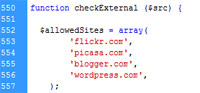
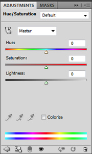
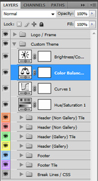
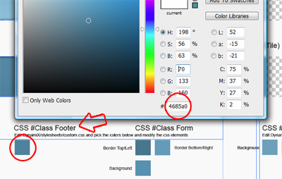
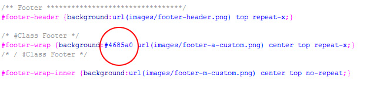
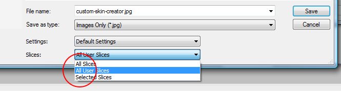

Table of Contents
Getting Started
4Header Settings
7Post Options
10Shortcodes
13Custom Skin Creator
16Demo Data
General Settings
5Footer Settings
8Page Options
11BuddyPress
14Sources & Credits
17Troubleshooting
Getting Started
Theme Installation
Please visit this page on the support website for how to install the theme correctly.
http://support.creativeworkz.co.uk/dynamix-getting-started/installing-dynamix/
After uploading the DynamiX theme, log into the dashboard and goto Appearance -> Themes and find the DynamiX theme then activate it. Once activated a tab will appear at the bottom left hand menu of Wordpress named "DynamiX".
Video Tutorials
General Settings
http://www.youtube.com/watch?v=GAwnV0-GJWA
Blog Settings
http://www.youtube.com/watch?v=4Vjh_kDsR24
Drop Panel /
Footer Settings
http://www.youtube.com/watch?v=FnIieYfVrGw
Shortcode Generator
http://www.youtube.com/watch?v=Llvoeng0DcE
Gallery Slideset System
http://www.youtube.com/watch?v=0-MUgzysMLY
Language Translation
http://www.youtube.com/watch?v=tr4Z5AEoUzk
How to create the home page Part 1
http://www.youtube.com/watch?v=kNbz1892acE
How to create the home page Part 2
http://www.youtube.com/watch?v=TXulV6DA81Y
How to create a
custom skin
http://www.youtube.com/watch?v=1GKJKmdXF-s
Image Resizing Script / External Image Support
Image resizing script Timthumb is bundled with DynamiX – this version supports external images, however a safe list is required. Locate the section of code shown below in DynamiX → lib → scripts → timthumb.php and add to the safelist the domains you wish to allow access to.

Language Translation
DynamiX is translation ready, included with the theme is the required files for the translating the theme into any language. Please watch the following screencast on how to translate the DynamiX theme using a wordpress plugin (codestyling localization).
Language Translation Screencast
http://www.youtube.com/watch?v=tr4Z5AEoUzk
The required files are located in the DynamiX/languages/ folder.
General Settings
General Settings Screencast Watch Now
After installation select the General Settings tab from the DynamiX menu. Below is a description of each option.
DynamiX Skins
The theme is split into two skins – select one of the 10 Outer Skin colours which affects the Header/Footer parts of the theme. The Inner Skin has two options – Light & Dark which affects the body of the theme.
Skins can also change per page – see Page Content Configuration within Pages in the Wordpress admin.Wordpress Custom Menu
Drop Panel Menu Item
To initiate the Drop Panel using WP Custom Menu, got to WP Admin → Appearance → Menus and click "Screen Options" (Top Right) and switch on "CSS Classes". Now create a new Custom Link with the URL left as http:// and give the link a name e.g. Contact Us.
Once the link is added to the menu, you need to remove the URL and paste droppaneltrigger into the CSS Classes field. Now your menu item will act as a drop panel trigger.
Main Menu Description
To add a menu description simply add text to the "Title Attribute".
Full Widget Footer / Drop Panel
Enable this option to drag and drop Widgets into the Footer / Drop Panel columns.
Once enabled goto WP → Admin Appearance → Widgets. Panels should be present representing each column of the Drop Panel and Footer.
Note any previous data stored in the Footer and Drop Panel will be replaced with the new widget system.
Sidebars
This option allows you to select how many sidebars you wish to create. Default is Two. See Wordpress Admin→ Appearance → Widgets once you have entered the amount of sidebars you require.
Branding Image
If you wish to upload your logo, please enter the URI of your image. Alternatively if you haven't uploaded one already select the Upload button and upload your logo to the media library then copy the URI of the image in the box.
The recommended dimensions for the image are (W) 225px * (H) 50px.
If this is left empty the theme will automatically display the Blog Title and Tagline – set in Settings → General.
Font Settings
If you wish to override the default font colours for the theme please enter a hexadecimal code without the # into each option.
Cufón Font Settings
To disable the Cufón text replacement script select Disable. For more information on the script see http://cufon.shoqolate.com/generate/ .
By default the Cufón script will affect all H1 → H6 tags – this can be modified by selecting which areas you wish to affect.
This theme is bundled with Lucida Sans Unicode font - you can upload your own font using the upload button, this will upload the font to the media library and then copy the URI into the box. New fonts can be created at http://cufon.shoqolate.com/generate/.
The default Cufón gradient colours can also be overridden by entering a hexadecimal code – this is broken down by theme areas. The colours go from top to bottom.
Timthumb Image Resizing Script
Timthumb image resizing script is enabled by default, if you do not want to have your images resized, you can disable it here.
JW Player Configuration
To play most Video / Audio formats with DynamiX, it's recommended to use JW Player embed option.
JW Player can be embedded into the Grid, Stage, Accordion, Group Slider Galleries and the Video Shortcode.
JW Player must be downloaded form http://www.longtailvideo.com/players/
Within the downloaded zip you will find the following files: jwplayer.js, player.swf, upload these files (via FTP or WP Media Library) and copy and paste the file URL's into the relevant fields (important).
Once this is complete JW Player can be selected from the embed option in both Posts → Embed Video / Timeout Options and Gallery Slide Set → Embed Type.
JW Player in Lightbox
To play JW Player within lightboxes specify the path of your JW Player flash file. e.g.
/wp-content/uploads/2011/03/player.swf then add the video path using the flashvars variable. e.g.
?flashvars=file=/wp-content/uploads/2011/03/InsideJob-Sample.mp4
So the full path looks similar to the following. (note! this is just an example - you'll need to modify to represent the paths to your own files).
/wp-content/uploads/2011/03/player.swf?flashvars=file=/wp-content/uploads/2011/03/InsideJob-Sample.mp4
Check the autoplay check option in either Gallery Slide Set or Posts → Embed Video / Timeout Options to automatically start the video.
Enter your Twitter account details and how many tweets you wish to display. The theme will cycle through your latest tweets. Enter a label e.g. DynamiX Tweets.
The Twitter pod can be enabled per page, under Pages in the Wordpress admin ( See lower Right hand area).
Blog Settings
Blog Settings Screencast Watch Now
Archive / Index Posts Configuration
Post View Type
Display your posts in normal or grid view. This will affect all archive, index and blog pages.
Post Content
Select post content type. This will determine what parts of the post you wish to display in the archive, index and blog pages. This does not affect the single post.
Excerpt Limit
If you select a Post Content type to include excerpt please enter the limit of words you want to use.
Postmeta Data
Choose where to display Comments and Date information.
Archive / Index Pages Image Configuration
Image Behaviour
Select the behaviour of the image, if set to Normal the image will act as a link – select lightbox and the image will display within a lightbox when clicked.
Image Effect
Select the effect you want to apply to the image.
Image Height
Enter a height value for all the images to be set by. This will automatically determine the width of the image if the image field is left blank.
Image Width
This is optional, if you want to set a default width for all images enter the value here.
NOTE! The settings above do NOT affect Full Post Content Type.
Single Post Image Configuration
Image Behaviour
Select the behaviour of the image, if set to Normal the image will act as a link – select lightbox and the image will display within a lightbox when clicked.
Image Effect
Select the effect you want to apply to the image.
Image Height
Enter a height value for all the images to be set by. This will automatically determine the width of the image if the image field is left blank.
Image Width
This is optional, if you want to set a default width for all images enter the value here.
NOTE! The settings above do NOT affect Full Post Content Type.
Archive / Index Page Layout Config
Page Configuration
Select page configuration for Archive / Index Pages (Blog Template page is defined the same as a normal page layout)
Column Configuration
Select column configuration for Archive / Index Pages.
Blog Templates
To add a BLOG page to your website goto Pages → Page Attributes → Template → Blog or Grid Blog
Your page now acts like a blog. You can select which categories you wish to display by selecting categories from the Blog Categories meta box (Bottom Right of Pages).
Add content to your blog
You can add content above your blog by entering information into the “Editor” like a normal page. This also includes adding galleries.
Header Settings
Drop Panel Settings Screencast Watch Now
Drop Panel Options
Select Number of Columns
By default the Drop Panel is split into 4 columns - this can be adjusted by changing this option.Enable / Disable
By default the Drop Panel is enabled. You can disable it and leave the Search bar or disable both Drop Panel and Search bar.
Menu Trigger Name / Menu Trigger Description adds a Menu item to trigger the Drop Panel. These options only appear when WP Custom Menu is disabled.
If you are using WP Custom menu and you require a Menu item to trigger the Drop Panel, please follow the instructions below.
Drop Panel Menu Item (WP Custom Menu)
To initiate the Drop Panel using WP Custom Menu, got to WP Admin → Appearance → Menus and click "Screen Options" (Top Right) and switch on "CSS Classes". Now create a new Custom Link with the URL left as http:// and give the link a name e.g. Contact Us.
Once the link is added to the menu, you need to remove the URL so it's blank and paste droppaneltrigger into the CSS Classes field. Now your menu item will act as a drop panel trigger.
Footer Settings
Footer Settings Screencast Watch Now
Footer Options
Select Number of Columns
By default the Footer is split into 4 columns - this can be adjusted by changing this option.Lower Footer Options
The Lower Footer can be disabled if required.
This area can contain text and HTML in both left and right sections. This is also an ideal place to enter your Google Analytics Code.
Gallery Slide Sets System
Gallery Slide Sets Screencast Watch Now
Gallery Slide Sets
The system has the same options as the post gallery. You MUST give each Slide Set a unique id otherwise the data can not be identified.
Complete the relevant fields you require. For just images, complete the Image URL and the Title field.
The description is HTML only, this means you will need to enter HTML in order to obtain paragraphs.
Basic HTML which is essential to creating paragraphs is <p>paragraph text</p>. Use this code for each paragraph you wish to have. Please search in google for other HTML formatting.
To create a new Slide, simply click the Add New Slide. The order of your images can be changed by dragging the slide up and down. (Note slides can NOT be dragged to other slide sets).
Once you have completed your slide set, goto your Page → Add Post / Slide Set Gallery or Shortcode Generator → Post / Slide Set Gallery → Data Source and select your Slide Set.
Select your relevant Slide Set from the drop menu. (Note, selecting a Slide Set overrides the post category – disable the slide set to enable the category option. )
Slide Set Options
Image URL
Enter the URL of the of the Image you wish to associate the post with. This image will appear in the Galleries and Archive/Post pages (see Show Image/Video in Post & Archive). Click "Get Image" button to upload/select an image in the media library.
If you do not enter an image into this field the Galleries will automatically detect the first image in the post and use that.
Video URL
As with the Image File, enter the URL of the Video file, from YouTube etc. The video file requires an Image File to use as a thumbnail.
Title
Enter a title which acts as an Image Alternate Text and Slide Title.
Description
Enter a description - this can contain shortcodes and HTML.
Embed Type
To embed a video within the gallery slide, select the relevant video type from this select menu.
Autoplay
Enabling this option will auto play the video within the gallery slide.
Timeout
This option overides the default timeout setting for this slide only. For example if the default time for all slides is 10 seconds and you enter 30 seconds in this option, this slide only will display for 30 seconds.
Link URL
This allows you to link the image/title to a URL ( Within your website or external ). To open the link into a new window add target_blank to the CSS Classes field.
Disable Link Text
This option removes the "Read More" text but still allows the post image/title to link.
Image Crop
DynamiX uses timthumb to resize it's images – one of it's options allows the image to be cropped or zoomed. Default is Cropped.
Stage Content
This option allows you to select what content is show in the Gallery, Image Only, Text & Image Left Align, Text & Image Right Align, Text Only. Text Only uses the description field.
Title Overlay
If you wish to overlay the gallery image with the Post Title / Post Sub Title text, select an option from this list. There are various options to suit the image the text is overlaying, including light or dark text.
CSS Classes
Add custom CSS Classes to your galleries. e.g. add target_blank to open the link url in a new window.
Filter Category
This applies to the Grid Gallery Only. Select a Category for this slide to appear in. (Create the Categories using the "New Filter Category" field.
3d Gallery Settings
Pieces
Number of pieces to which the image is sliced.
Time
Time for one cube to turn.
Transition
Choose from various Tweener effects.
Delay
Delay between the start of one cube to the start of the next cube.
DepthOffset
The offset during transition on the z-axis. Value between 100 and 1000 are recommended. But go for experiments.
CubeDistance
The distance between the cubes during transition. Values between 5 and 50 are recommended. But go for experiments.
Post Options
Post Content Configuration
Post Title
If you wish to display a title other than the given one for the post name enter this here. Alternatively enter the text BLANK to block the page title from displaying.
Post Sub Title
Enter a page Sub Title if required, this will appear directly underneath the main Post Title.
Enable Text Resizer
Enable this option to display the text resizer icons which allows the user to increase or decrease the size of the font within the main content.
Hide Breadcrumbs
Disable the breadcrumbs from displaying on this post only.
Disable Content Border
Disable the Content Border for this post only.
Publish Author Name
Publish the author name that created this post.
Social Options
Social Options allows you to add various Social Networking links to your Page or Post. It also allows you to add a Twitter Feed to the page – this will cycle through your latest tweets. See General Settings → Twitter from the DynamiX menu.
Twitter can be placed either above or beneath the content.
Social Networking icons can also be placed within the content of the Page/Post.
Each social networking icon added to the page will link that page and attempt to post it on the social networking site. The colours of the icon are determinded by the font colour set in General Settings → Font Settings from the DynamiX menu.
Disable Heart Icon
Selecting this option will display the Social Networking icons directly on the page without the "Heart" graphic.
Shortcode Generator
Add Shortcodes to your Post/Page. See Shortcode Generator
Post / Page Layout Configuration
Select the ideal layout configuration for the post / page you are creating – the columns are numbered and coloured to easily identify with selecting a sidebar for that column.
Sidebar Configuration
If you have selected a layout configuration with columns this panel will allow you to configure that column with a sidebar. See General Settings → Sidebars from the DynamiX menu to create more than the default 2. To populate your sidebars see WP Admin → Appearance → Widgets.
The option is also available to make that column borderless.
If a layout only contains one column the yellow column (Column 2) option will be ignored.
Post Image Gallery Options
Always ensure you save your post within a relevant category e.g. home images, portfolio, video work etc – this will help identify your posts when creating a Gallery.
Image / Video Source
URL of Image File
Enter the URL of the of the Image you wish to associate the post with. This image will appear in the Galleries and Archive/Post pages (see Show Image/Video in Post & Archive). Click "Get Image" button to upload/select an image in the media library.
If you do not enter an image into this field the Galleries will automatically detect the first image in the post and use that.
URL of Video File
As with the Image File, enter the URL of the Video file, from YouTube etc. The video file requires an Image File to use as a thumbnail.
Embed Video / Timeout Options
Embed Video Type
To embed a video within the gallery slide, select the relevant video type from this select menu.
Autoplay Video
Enabling this option will auto play the video within the gallery slide.
Stage Gallery Slide Timeout
This option overides the default timeout setting for this slide only. For example if the default time for all slides is 10 seconds and you enter 30 seconds in this option, this slide only will display for 30 seconds.
Additional Settings
Enter post order number
If you wish to change the order of the images within the post galleries you can enter an order number. 0 being first then increment by adding a number afterwards. It MUST begin with a 0 then the number e.g. 01,02,03.
Show Image/Video in Post & Archive
If you wish to display your Image File as part of the post in the Archive and Single Post pages then select this option. If this option is enabled it will display the image within the post and enable the Lightbox effect. If you have a Video file also associated with the post it will use the Image as a thumbnail and then open the video within the Lightbox.
Image Orientation
This option applies to Archive / Index / Blog pages. Default is landscape, if your image is portrait change this option.
CSS Classes
Add custom CSS Classes to your galleries. e.g. add target_blank to open the link url in a new window.
Link Image to Alternative URL
This option is for Galleries ONLY! - this allows you to link the image to an alternative URL ( Within your website or external ). e.g. The image advertises a Service – link the image to a Services page.
Disable Gallery Image Link
If you wish to just display an image within a gallery without linking to the post it is associated with or any other URL then enable this option.
Disable Read More Only
This option removes the "Read More" text but still allows the post image/title to link.
Image Crop Settings
DynamiX uses timthumb to resize it's images – one of it's options allows the image to be cropped or zoomed. Default is Cropped.
Stage Gallery Settings
These settings ONLY apply to the Stage Gallery Settings.
Gallery Image Content
This option allows you to select what content is show in the Gallery, Image Only, Text & Image Left Align, Text & Image Right Align.
Display Post Title On Image
If you wish to overlay the gallery image with the Post Title / Post Sub Title text, select an option from this list. There are various options to suit the image the text is overlaying, including light or dark text.
3d Gallery Options
Pieces
Number of pieces to which the image is sliced.
Time
Time for one cube to turn.
Transition
Choose from various Tweener effects.
Delay
Delay between the start of one cube to the start of the next cube.
DepthOffset
The offset during transition on the z-axis. Value between 100 and 1000 are recommended. But go for experiments.
CubeDistance
The distance between the cubes during transition. Values between 5 and 50 are recommended. But go for experiments.
Page Options
Page Content Configuration
Menu Description
This field allows you to enter a description of the page which will appear in the Menu Navigation.
Page Title
If you wish to display a title other than the given one for the page name enter this here. This is ideal for page titles too large for the menu. Alternatively enter the text BLANK to block the page title from displaying.
Page Sub Title
Enter a page Sub Title if required, this will appear directly underneath the main Page Title.
Hide Breadcrumbs
Disable the breadcrumbs from displaying on this post only.
Hide Content
This is ideal if you wish to just display a Post Gallery on the page without any other text/content.
Disable Content Border
Use this to disable the main border which surrounds the page content. Ideal if you wish to format the page differently – You can use the Shortcode Generator → Styled Boxes → General to add the same border type around selected content only.
Publish Author Name / Date
Selecting these options will display the Publish Date and Author Name on the page.
Enable Text Resizer
Enable this option to display the text
Page Skins
If you wish to assign a skin to a specific page, you can do so by selecting a Outer Skin option and Inner Skin option. (This will override the global skin setting).
Social Options
Social Options allows you to add various Social Networking links to your Page or Post. It also allows you to add a Twitter Feed to the page – this will cycle through your latest tweets. See General Settings → Twitter from the DynamiX menu.
Twitter can be placed either above or beneath the content.
Social Networking icons can also be placed within the content of the Page/Post.
Each social networking icon added to the page will link that page and attempt to post it on the social networking site. The colours of the icon are determinded by the font colour set in General Settings → Font Settings from the DynamiX menu.
Disable Heart Icon
Selecting this option will display the Social Networking icons directly on the page without the "Heart" graphic.
Shortcode Generator
Add Shortcodes to your Post/Page. See Shortcode Generator
Post / Page Layout Configuration
Select the ideal layout configuration for the post / page you are creating – the columns are numbered and coloured to easily identify with selecting a sidebar for that column.
Sidebar Configuration
If you have selected a layout configuration with columns this panel will allow you to configure that column with a sidebar. See General Settings → Sidebars from the DynamiX menu to create more than the default 2. To populate your sidebars see WP Admin → Appearance → Widgets.
The option is also available to make that column borderless.
If a layout only contains one column the yellow column (Column 2) option will be ignored.
Add Post / Slide Set Gallery
A Post Gallery ( collection of posts grouped by category ) and Gallery Slide Set can be added to any page – you can select from Stage Slider, Group Slider, Grid Gallery, 3d Gallery and Accordion.
Gallery Data Source
Once you have created your Posts with images or Gallery Slide Set, you can select the Post Category or Slide Set ID from the Data Source Tab.
More than one Post category can be selected e.g. video portfolio, graphic design portfolio.
Image Effects
Each gallery can be customised by adding Image effects to each image displayed. Add a reflection, shadow or reflection and shadow combined.
Enable Lighbox
Depending on the gallery requirements, Lightbox can be enabled – this display the full size image within a lightbox or if a video is attached for that post it will display the video in the lightbox. Alternatively the image will link to the post it was created in or a specific URI specified. ( See Post Image / Gallery Options - Located under Posts )
Additional Settings
Group Slider, Grid Gallery, Accordion Content
This option allows you to choose what to display in those galleries. A choice of Text Image, Title Image, Title Overlay Image, Title & Text Overlay Image, Image Only, Text Only. Title Overlay Image and Title & Text Overlay Image reveal the Title/ Description Text when the image is hovered over.
Group Slider / Grid Gallery Position
the option is available to display the gallery above or below the main content.
Grid Gallery Columns
Choose between 3 and 6 columns for the Grid Gallery.
Grid Gallery Show Posts
For use with Posts only, paginate how many posts to display on a page.
Grid Gallery Category Filter
Enable for animated category filtering. Select more than one Post category or create Gallery Slide Set categories (See Gallery Slide Set).
If a category is clicked, the gallery is animated to filter only the Images within that category.
Group Slider, 3d Gallery, Grid Row Height
Specify the heights of galleries to accommodate the content. This option is for Grid (This controls the Grid Row Height), Group Slider and the 3d Gallery only. For Stage gallery see Image Height below this option.
Image Height
The image height within the galleries can be configured here, default heights are specified so this is optional but gives you the complete control over how the gallery displays.
Image Width
For use with Stage and 3d Galleries Only - control the width with this option, default is 940px.
Number of Posts to Display
Limit the number of posts you want to display from the gallery.
Excerpt Word Limit
Limit the amount of words you want the gallery to display. Default is 55 words.
Sort By and Order By
Control how the posts are retrieved from the database - for Posts only.
Slide Timeout
Set the length of time the slides are visible for. This is a global setting for that gallery, you can add further control under the Gallery Post by selecting a greater or lesser time which will be unique to that gallery slide.
This option applies to Stage, Accordion and Group Slider Galleries only.
Stage Gallery Navigation
Control your gallery slides with an optional navigation.
3d Gallery Options:
Pieces
Number of pieces to which the image is sliced.
Time
Time for one cube to turn.
Transition
Choose from various Tweener effects.
Delay
Delay between the start of one cube to the start of the next cube.
DepthOffset
The offset during transition on the z-axis. Value between 100 and 1000 are recommended. But go for experiments.
CubeDistance
The distance between the cubes during transition. Values between 5 and 50 are recommended. But go for experiments.
The width of the image for the Stage Gallery should be at least 940px.
Accordion Gallery Options
Accordion Auto Rotate
Enable to auto rotate through each accordion panel.Set the timeout using the Slide Timeout option
Accordion Startup Mini Titles
This option is enabled by default, it displays the Title overlaying each image when the gallery has loaded.
Blog Categories
To add a BLOG page to your website goto Page Attributes → Template → Blog or Grid Blog
Your page now acts like a blog. You can select which categories you wish to display by selecting categories from the Blog Categories meta box.
Add content to your blog
You can add content above your blog by entering information into the “Editor” like a normal page. This also includes adding galleries.
Galleries
External Galleries
To create an External Gallery (Outside of the main content) you can do so by going to Pages → Add Post / Slide Set Gallery. See Page Options for details on what the options do.
Choose from the following Galleries
Stage Gallery
http://dynamix.creativeworkz.co.uk/galleries-2/stage/
Group Slider
http://dynamix.creativeworkz.co.uk/galleries-2/group-slider/
Grid Gallery
http://dynamix.creativeworkz.co.uk/4-columns-sortable/
3d Gallery
http://dynamix.creativeworkz.co.uk/3d-slider/
Accordion Gallery
http://dynamix.creativeworkz.co.uk/accordion-gallery/
Internal Galleries
To create an Internal Gallery (Inside of the main content) you can do so by going to Shortcode Generator → Post / Slide Set Gallery. See Shortcode Generator for details on what the options do.
Choose from the following Galleries
Image Gallery
Group Slider
Grid Gallery
Accordion Gallery
See this page for examples http://dynamix.creativeworkz.co.uk/shortcodes/post-galleries/
Shortcode Generator & Contact Form
General Shortcodes
Contact Form
Below is the shortcode for the contact form (If you intend to add more than one contact form, you must change the ID).
[enquiry_form id="footercontact" emailto="myemail@address.com" thankyou="thanks, we'll be in touch soon!" /]
Shortcode Generator Screencast
http://www.youtube.com/watch?v=Llvoeng0DcE
The Shortcode Generator was designed to allow the user to create complex shortcodes without having to type all the individual values. Itallows the user to select a Shortcode they wish to add and enter values into the specific fields.
The Shortcodes provided are as follows;
- Post / Slide Set Gallery
- Columns
- Styled Boxes
- Buttons
- Horizontal Break
- Block Quote
- Highlight
- Image Shortcode
- Video Shortcode
- Tabs
- Accordion
- List
- Reveal Content
- Drop Caps
Once you have entered the values simply click the "Send Shortcode to Editor" button which automatically generates all the code for you within the editor.
Post / Slide Set Gallery
Add a Post or Gallery Slide Set Gallery by using this shortcode – this allows you to add a gallery anywhere on your website. They can be placed anywhere in the main content, sidebars (Using Text Widget), Drop Panel and the Footer.
Select Type
There are three types of Post Gallery's you can add
- Image Gallery
- Slider Gallery
- Grid Gallery
- Accordion Gallery
Each has it's own options and can be highly customised adding image effects and specific heights to suit the types of images used. Simply select a Post Category or Gallery Slide Set containing the images you wish to display. Under Slider Gallery and Grid Gallery you can select the type of content to display.
It's recommended that you open a page and experiment with the settings to achieve your perfect configuration.
View this page for examples (click view code under each gallery to get shortcode) http://dynamix.creativeworkz.co.uk/shortcodes/post-galleries/
Columns
Select this option to generate a range of columns.
Content can be pasted into the individual fields or select the options you require and manually enter the content between the relevant parts of the shortcode.
The columns have the option of having a border and the height can be specified in pixels to create an equal length.
View this page for examples http://dynamix.creativeworkz.co.uk/shortcodes/columns/
Styled Boxes
Select from a range of styled boxes, each comes with it's own icon aside from General and Shadow.
The width can be specified in pixels along with the alignment.
Paste the content into the "Box Content" field and press the "Send Shortcode to Editor" button.
View this page for examples http://dynamix.creativeworkz.co.uk/shortcodes/styled-boxes/
Buttons
Button shortcode allows you to add buttons to your page with a range of colours shown above.
There are two types of button "Button" and "Drop Panel Trigger". The first is a normal button which allows you to add a URI. The latter being a button which triggers the Drop Panel. e.g. You create a contact us form in the Drop Panel and somewhere on the page create a "Drop Panel Trigger" button, this will trigger the panel to drop down.
A width and button text can be specified for both.
View this page for examples http://dynamix.creativeworkz.co.uk/shortcodes/button-shortcodes/
Horizontal Break
The horizontal break has two options - "Break Line" and "Break Line Top Link". This adds a horizontal break line across the page. The latter adds a top link to navigate the user back to the top.
View this page for examples http://dynamix.creativeworkz.co.uk/shortcodes/general-styling/
Block Quotes
There are two types of Block Quotes, "Block Quote Line" and "Block Quote Quotes". The first displays a line to separate to the left or right of the text (dependant on alignment) and the latter displays quotes surrounding the text.
View this page for examples http://dynamix.creativeworkz.co.uk/shortcodes/general-styling/
Highlight
Select a the highlight shortcode if you wish to add a highlight to a selection of text. There are two types available – black and the current link color you have selected.
Select the Type and enter the text you wish to highlight.
View this page for examples http://dynamix.creativeworkz.co.uk/shortcodes/general-styling/
Image Shortcode
The Image Shortcode allows you to add effects to an image.
Enter the URL of the image you want to apply the effect to and select from one of the effects available.
A lightbox can be added to the image with the option to link to a video URI (Youtube etc).
Enable Title Text Overlay
This displays the title over the image when the image is hovered over.
View this page for examples http://dynamix.creativeworkz.co.uk/shortcodes/image-effects/
Video Shortcode
Select from a range of Video Embed Types
YouTube, Vimeo, Flash and JW Player.
JW Player
You must ensure the JW Player files are installed first. (See General Settings). There are unique options for JW Player:
JW Player Image URL - Whilst the video is buffering or loading JW Player can use a holding image.
Video ID - If you plan on having more than one JW Player Video Shortcode on a page, ensure you enter a unique ID.
View this page for examples http://dynamix.creativeworkz.co.uk/shortcodes/video-shortcodes/
Tabs
Add a jQuery Tab Shortcode to your page - enter the amount of Tabs you require and click Send Shortcode to Editor and change the default Titles and Content.
View this page for an example http://dynamix.creativeworkz.co.uk/tabs/
Accordion
Add a jQuery Accordion Shortcode to your page - enter the amount of Panels you require and click Send Shortcode to Editor and change the default Titles and Content.
View this page for an example http://dynamix.creativeworkz.co.uk/accordion/
List
Add a List shortcode to your page, select the color, type and items you require and click Send Shortcode to Editor.
View this page for examples http://dynamix.creativeworkz.co.uk/lists/
Reveal Content
The Reveal Content Shortcode reveals content when it's clicked on. Enter the Title (e.g. view code), the content you wish to reveal and if required the width and alignment. Shortcode example below.
Drop Caps
Choose between two types of Drop Caps, the Color and enter the text you want to appear as a Drop Cap.
View this page for examples http://dynamix.creativeworkz.co.uk/drop-caps/
BuddyPress
DynamiX supports the BuddyPress Plugin, this allows you to use your WP site as usual but with the added features of BuddyPress. To activate BuddyPress you need to download the BuddyPress plugin via the Wordpress Admin → Plugins → Add New.
Once activated DynamiX automatically enables BuddyPress features. You can create Groups by clicking on My Account → Groups → My Groups → Create Group.
See the http://buddypress.org site for help setting up.
Add BP pages to Custom Menu
To add BP pages to your WP Custom Menu, simply add the URL's of what you require, examples below.
Link to Groups Overview
/groups/
Link to Group Example
/groups/your-group-name/
Link to Group Forum Example
/groups/your-group-name/forum/
Link to Registration
/register/
Forums Overview
/forums/
NOTE, no support is given for how to use or install BuddyPress – the only support given is for any CSS issues.
Child Theme
A child theme is designed to allow you to makes changes to the CSS and Functions without affecting the core files, making it easy to modify and still upgrade easily.
Upload the DynamiX-Child folder to the same directory as the DynamiX folder i.e.
http://yourdomain.com/wp-content/themes/DynamiX
http://yourdomain.com/wp-content/themes/DynamiX-Child
Once uploaded, goto your WP Admin → Appearance → Themes and activate the DynamiX Child theme.
From here you can modify the DynamiX-Child/style.css via FTP or via WP Admin → Appearance → Editor.
For example, If you wish to change overall font size of the Theme the following CSS would be added to the DynamiX-Child/style.css file.
body {
font-size: 0.85;
}
It's recommend that you have a copy of the core DynamiX/style.css to view when wanting to change attributes. Whatever is defined in the DynamiX/style.css needs to be re-defined the same way in the DynamiX-Child/style.css file.
e.g. The following is for the header logo description position, found in the core DynamiX/style.css.
#header-logo .description { position:absolute;margin-top:33px;}
To modify the margin-top value you would add the following in the DynamiX-Child/style.css
#header-logo .description { margin-top:40px;}
If the change does not apply, the !important rule maybe needed. e.g.
#header-logo .description { margin-top:40px !important;}
Custom Style Sheet
If you are using a custom stylesheet you want to load in, do the following.
For example, if you have created a custom skin (using the custom.css stylesheet) - copy your DynamiX/stylesheets/ folder contents to the DynamiX-Child/stylesheets/ folder contents (overwrite any existing files). And place the following code in the DynamiX-Child/functions.php file.
Custom Skin Creator
Custom Skin Creator Screencast Watch Now
There are several PSD files included with this theme and fully sliced. They are designed to help you create further colour schemes easily if required.
Each of the outer skin colour variations are included.
Custom Skin Creator PSD (Photoshop Required)
Locate and open the custom skin creator under the folder DynamiX/PSD/custom-skin-creator.psd
1) Enable slices under View → Show → Slices
2) Press F7 to view Layers or Window → Layers
Layer colours can be manually changed under each group or you can use the built in Adjustment Layers.
It's recommended to use the Hue/Saturation adjustment layer and
adjust the Hue scrub.
To adjust the hue right click the Hue/Saturation adjustment layer under layers and select Edit Adjustment – the Hue/Saturation panel will appear. Drag the scrub you will see the entire skin change colour.

Once you are happy with the colour, you need to open the following file
DynamiX/stylesheets/custom.css
4) Edit custom.css file
There are three sections that need to be modified for the theme to work correctly.
#Class Menu
#Class Footer
#Class Form
Within the custom-skin-creator.psd file there are 3 sections with various colour block underneath them.
Pick the colours on each block using the colour picker in photoshop and copy the hex colour in the relating Class in custom.css
See example

Under custom.css paste 4685a0 into #Class Footer section

Repeat the process for each section – once this is complete you need to export the images.
4) Within Photoshop Select File → Save For Web & Devices (Each slice is configured already) → Click Save.
Important!
Ensure that Slices → All User Slices is selected otherwise more images than you need will be created.

Navigate to the Theme Folder DynamiX/stylesheets/ (DO NOT click on the image folder otherwise this will not work) → Click Save → You will be prompted to replace your existing custom images. Take note of the images if required (For FTP) → Click Replace.
Use your FTP client to upload the following modified files
DynamiX/stylesheets/custom.css
DynamiX/stylesheets/images/header-a-custom.png
DynamiX/stylesheets/images/header-b-custom.png
DynamiX/stylesheets/images/header-c-custom.png
DynamiX/stylesheets/images/header-d-custom.png
DynamiX/stylesheets/images/footer-a-custom.png
DynamiX/stylesheets/images/footer-m-custom.png
DynamiX/stylesheets/images/break-a-custom.png
DynamiX/stylesheets/images/break-c-custom.png
Alternatively if you are using Wordpress to upload your theme you will need to re-zip just the Theme Folder (Doesn't include the PSD folder etc) and use the WP admin to re-upload the theme.
Once this is complete you can login to your WP admin → Select General Settings from the DynamiX menu and change to the outer skin (Header / Footer) to custom.
For more complex skins, take a look at the bundled PSD files for Urban, Wood, Bokeh, Carbon and Grunge skins.
Sources & Credits
Pretty Photo
http://www.no-margin-for-errors.com/projects/prettyphoto-jquery-lightbox-clone/
Timthumb
http://www.darrenhoyt.com/2008/04/02/timthumb-php-script-released/
Reflection
http://www.digitalia.be/
Cufón text replacement script
http://cufon.shoqolate.com/generate/
Kwicks Basic Script
http://www.jeremymartin.name/projects.php?project=kwicks
Piecemaker
http://www.modularweb.net/
Contact Details
If you are experiencing any difficulties with this theme please join the support forum @ http://support.creativeworkz.co.uk or contact me via this contact form @ http://themeforest.net/user/cwz000 – ENJOY!! :)
Demo Data
Note The demo data does not include the images and sidebar data from the demo site, it does include the page structures, gallery settings, menus etc.
If you would like to import the data from the demo site, goto the Wordpress Admin → Tools → Import → Wordpress
You may be required to install a plugin (Wordpress Importer) - install this plugin.
Click Choose File → Navigate to the DynamiX-Wordpress folder on your computer → DynamiX-Wordpress → DynamiX-Demo-Data → dynamix-demo-data.xml→ Click Upload file and import. Select the relevant options you want to import.